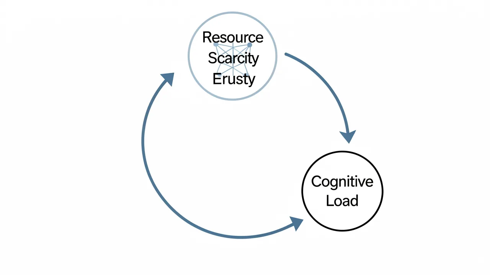

Die psychologische Struktur von Hyperwachsamkeit in Umgebungen mit hoher Gewaltbereitschaft
Eine Untersuchung darüber, wie systemische Gewalt und sozioökonomische Instabilität die kognitive Verarbeitung und die neurologischen Stressreaktionen verändern.

Erstellen Sie ein kostenloses DeepSage-Konto, um Artikel zu speichern, die Ergebnisse von Quizfragen zu verfolgen und als Erster die tägliche Zusammenfassung zu erhalten.
- Hypervigilance is a biological adaptation to unpredictable environmental threats.
- Chronic stress shifts brain function from executive processing to survival circuits.
- Socioeconomic instability and violence create a self-reinforcing cycle of instability.
- Early exposure to violence can fundamentally alter neurological development and learning capacity.
Wie passt sich das menschliche Gehirn an, wenn seine primäre Umgebung durch unvorhersehbare, lebensbedrohliche Gefahren gekennzeichnet ist? Diese Frage berührt den Zusammenhang zwischen Soziologie und Neurobiologie und konzentriert sich insbesondere darauf, wie die chronische Exposition gegenüber Gewalt nicht nur als äußeres Ereignis, sondern auch als ein anhaltendes kognitives Rahmenwerk wirkt. Um die Fortdauer von Gewalt in bestimmten Regionen zu verstehen, muss man über die unmittelbare Verfügbarkeit von Waffen hinausgehen und die tiefer liegenden, sich selbst erhaltenden psychologischen Strukturen betrachten – wie etwa übermäßige Wachsamkeit und eine veränderte Bewertung von Bedrohungen –, die aus dem Leben in einem Zustand ständiger physiologischer Erregung entstehen.

1. Die Mechanismen der Hyperwachsamkeit
Hyperwachsamkeit ist mehr als bloße Vorsicht; es ist ein Zustand erhöhter sensorischer Empfindlichkeit, bei dem die Amygdala des Gehirns sich in einem nahezu ständigen Aktivierungszustand befindet. In Umgebungen, in denen Gewalt häufig und unvorhersehbar auftritt, priorisiert das Gehirn die schnelle Erkennung von Bedrohungen gegenüber allen anderen kognitiven Funktionen, wie z. B. langfristiger Planung oder komplexen sozialen Beziehungen. Dies führt zu einer Rückkopplungsschleife: Die Umgebung erfordert eine hohe Sensibilität, und diese hohe Sensibilität verändert die Art und Weise, wie ein Individuum neutrale Reize als potenziell feindselig wahrnimmt.
Wenn ein Mensch in einem Zustand ständiger Alarmbereitschaft lebt, wird der präfrontale Kortex – der Bereich, der für exekutive Funktionen und Impulskontrolle zuständig ist – oft umgangen, und stattdessen werden primitivere Überlebensmechanismen aktiviert. Diese Veränderung ist keine bewusste Entscheidung, sondern eine biologische Anpassung an unvorhersehbare UmweltbelastungenDa das Gehirn lernt, nach Gefahrenmustern Ausschau zu halten, wird es zunehmend schwieriger, in einen Zustand der Ruhe zurückzukehren, selbst wenn die unmittelbare körperliche Sicherheit gewährleistet ist.
2. Der Kreislauf der sozioökonomischen und kognitiven Verstärkung
Gewalt ist selten ein isoliertes Phänomen; sie ist tiefgreifend mit etwas anderem verbunden. strukturelle Armut und mangelnde institutionelle UnterstützungDie Beziehung zwischen diesen Faktoren ist wechselseitig. Wirtschaftliche Benachteiligung schränkt den Zugang zu den Ressourcen ein, die gerade zur Abschwächung der physiologischen Auswirkungen von chronischem Stress notwendig sind – dazu gehören Bildung, Gesundheitsversorgung und ein sicheres Wohnumfeld.
Übermäßige Wachsamkeit führt zu einer kognitiven Verzerrung, bei der neutrale Umgebungsreize zunehmend als potenzielle Gefahren interpretiert werden.
Dies führt zu einer strukturellen Verstärkung von Gewalt über verschiedene Kanäle:
- Ressourcenknappheit: Der Wettbewerb um begrenzte Güter erhöht die Häufigkeit zwischenmenschlicher Konflikte.
- Vertrauensverlust: In gewalttätigen Umgebungen wird das „soziale Kapital“ geschwächt, was kollektives Handeln und gemeinschaftliche Polizeiarbeit erschwert.
- Kognitive Belastung: Die geistige Energie, die zur Bewältigung der ständigen Bedrohung erforderlich ist, reduziert die Ressourcen, die für die persönliche oder berufliche Weiterentwicklung zur Verfügung stehen.

Wenn sich diese Stressfaktoren anhäufen, verändern sie grundlegend das soziale Gefüge. Wenn sich Einzelpersonen nicht mehr auf rechtliche oder soziale Institutionen verlassen können, um Schutz zu erhalten, greifen sie oft auf lokale, informelle und häufig gewalttätige Sicherheitsmethoden zurück. Diese Verschiebung stellt einen Übergang von institutionellem Vertrauen zu einer Abhängigkeit von unmittelbaren, physischen Abschreckungsmitteln dar.
3. Die langfristigen Auswirkungen auf Lernen und Entwicklung
Bei jüngeren Bevölkerungsgruppen sind die Auswirkungen dieser Umgebung besonders ausgeprägt. Neuroplastizität ist zwar ein Vorteil für das Lernen, bedeutet aber auch, dass das Gehirn sehr anfällig dafür ist, sich auf das Überleben einzustellen. Das Aufwachsen in einem Zustand chronischer physiologischer Erregung kann zu dauerhaften Veränderungen in der Art und Weise führen, wie das Gehirn Informationen verarbeitet und Emotionen reguliert.
Lang anhaltende Gewalteinwirkung kann die Fähigkeit des präfrontalen Kortex, Impulskontrolle auszuüben, dauerhaft beeinträchtigen.
Dieses neurologische Priming kann zu dem führen, was einige Forscher als eine „Denkweise der Knappheit“ bezeichnen, bei der der Fokus auf das unmittelbare Überleben die Fähigkeit, sich mit anderen Dingen auseinanderzusetzen, verhindert. langfristige kognitive Modellierung für komplexes Lernen erforderlich. Das Problem liegt daher nicht nur in einem mangelnden Zugang zu Klassenzimmern, sondern in der Existenz einer biologischen Barriere, die der tiefen Konzentration und dem psychologischen Sicherheitsgefühl entgegensteht, die für eine effektive Bildung notwendig sind. Um die Gewalt zu bekämpfen, muss man die zugrunde liegende neurologische und soziologische „Infrastruktur“ angehen, die sie aufrechterhält.
Zusammenfassung
Gewalt in Umgebungen mit hohem Risiko wird durch ein komplexes Zusammenspiel externer sozioökonomischer Bedingungen und interner psychologischer Anpassungen aufrechterhalten. Übermäßige Wachsamkeit und eine veränderte Wahrnehmung von Bedrohungen dienen als Überlebensmechanismen, schaffen aber auch einen sich selbst verstärkenden Kreislauf, indem sie das soziale Vertrauen untergraben, die kognitive Belastung erhöhen und die neurologische Entwicklung verändern. Um diesen Kreislauf zu durchbrechen, sind Maßnahmen erforderlich, die sowohl die physische Verfügbarkeit von Gewalt als auch die zugrunde liegenden biologischen und sozialen Stressfaktoren angehen, die übermäßige Wachsamkeit zu einer notwendigen, aber zerstörerischen Lebensweise machen.
Referenzen
- Kang, M. – Analyse der psychologischen und sozialen Ursachen von Gewalt.
- Neurobiologische Studien zu chronischem Stress und Amygdala-Aktivierung.
- Soziologische Rahmenwerke zur Auswirkung von Armut auf die Stabilität von Gemeinschaften.
- Hypervigilance
- A state of increased sensory sensitivity and heightened arousal in response to perceived threats.
- Amygdala
- An almond-shaped part of the brain integral to processing emotions and detecting threats.
- Prefrontal Cortex
- The brain region responsible for complex cognitive behavior, decision-making, and moderating social behavior.
Nimm an dem begleitenden Quiz zu dieser Geschichte teil und finde heraus, wie gut du abschneidest.
Machen Sie das Quiz.Erstellen Sie ein kostenloses DeepSage-Konto, um Artikel zu speichern, die Ergebnisse von Quizfragen zu verfolgen und als Erster die tägliche Zusammenfassung zu erhalten.
Das könnte Sie auch interessieren.